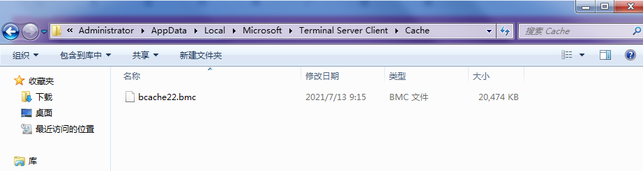
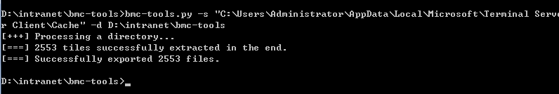
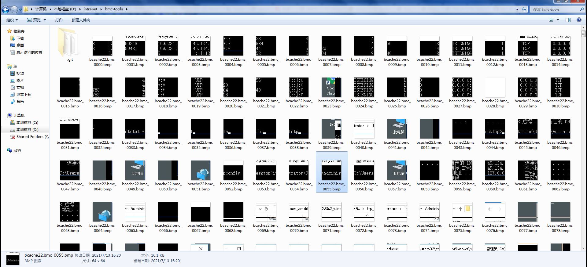

¶前言
常规的信息收集技术就不多讲了，前两天apt32砖家东给我发来一篇文章
我一看，牛蛙，rdp远程桌面重现，没想到信息收集还能有这种姿势，属实稀奇，于是试玩了一波
¶原理
文章写的很详细，我就不赘述了，大致原理就是远程桌面会有缓存，解析缓存重现rdp
¶复现
打开缓存目录C:\Users\Administrator\AppData\Local\Microsoft\Terminal Server Client\Cache，看到确实有文件
阅读本篇文章能了解到：信息收集，工具利用

有大佬写好了工具，直接用工具解析该文件，想知道原理的可以去看原文章
1 | bmc-tools.py -s "C:\Users\Administrator\AppData\Local\Microsoft\Terminal Server Client\Cache" -d d:\intranet\bmc-tools |

提取完成，20m文件提取出2553个文件，还是蛮多的，打开看下

¶总结
很新奇的一种信息收集方式，虽然用处不是那么大，但在实在无法收集到信息的时候还是可以尝试一下，属于走投无路的一种奇技淫巧，特此记录